---
{
  "layout": "note",
  "title": "Ch7 Instability 2 - Orr Sommerfeld Eq.",
  "journal": true,
  "section": "Study",
  "topic": "Viscous Flow",
  "excerpt": "지난 시간에는 Method of Normal modes 방식을 통해서, 나란히 흐르는 속도가 다른 두 유체의 interface에서의 instability Kelvin-Helmholtz Instability 에 대해서 알아 보았다. \b",
  "classes": "wide",
  "permalink": "/blog/mechanical-engineering/viscous-flow/ch7-instability-2-orr-sommerfeld-eq/",
  "study_area": "Mechanical",
  "date": "2024-12-10",
  "source_url": "https://jeffdissel.tistory.com/136",
  "header": {
    "teaser": "/blog/mechanical-engineering/viscous-flow/ch7-instability-2-orr-sommerfeld-eq/images/img-001.png"
  }
}
---
{% raw %}<p>지난 시간에는<br />
Method of Normal modes<br />
방식을 통해서,<br />
나란히 흐르는 속도가 다른 두 유체의<br />
interface에서의 instability<br />
Kelvin-Helmholtz Instability<br />
에 대해서 알아 보았다.<br />
<br />
밑의 basic flow가 흐르고 있다고 가정하자.<br />
(3 dimensional flow)<br />
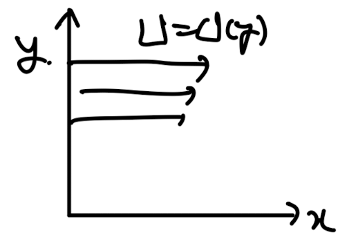<br />
여기서 perturbation을<br />
fluctation이라고 생각해보자.<br />
(난류의 속도를 average velocity,<br />
fluctuation velocity를 나누는 것처럼)<br />
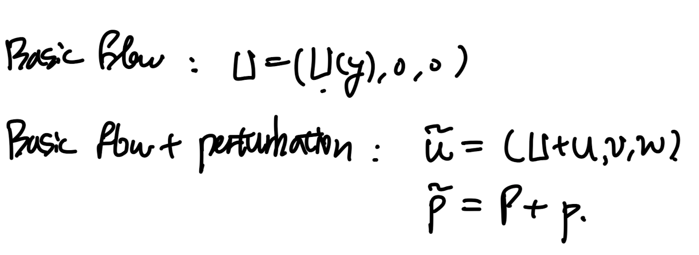<br />
먼저 Basic flow를<br />
Naviers stokes x방향 식에 대입해주면,<br />
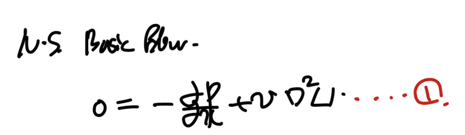<br />
이번에는, perturbation을 포함한 속도장<br />
NS x방향 식에 대입해주자.<br />
여기서 U &gt;&gt; u 임을 이용하고, dU/dx = dU/dz = 0 임을 적용해주자.<br />
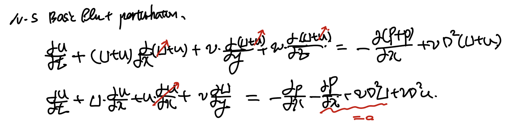<br />
+ 1번식의 을 이용하여 우항의 가운데 = 0 임을 알 수 있다.<br />
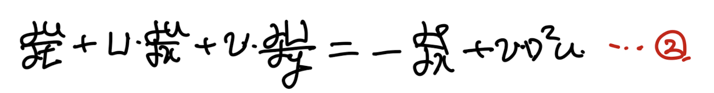<br />
Naviers stokes x 방향 식<br />
같은 방식으로 y,z 방향도 진행해주자.<br />
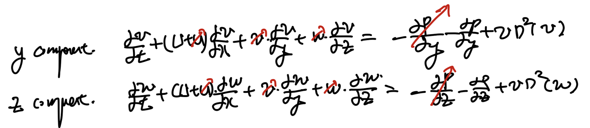<br />
정리해 주면,<br />
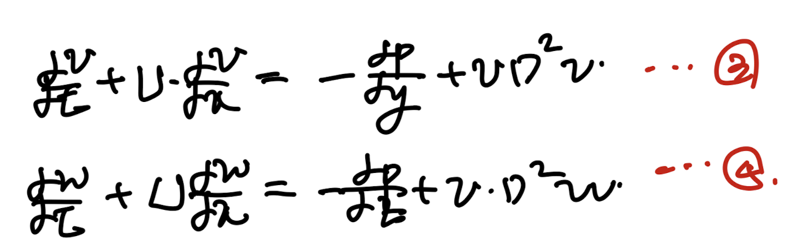<br />
여기에 연속방정식 까지 진행해주자<br />
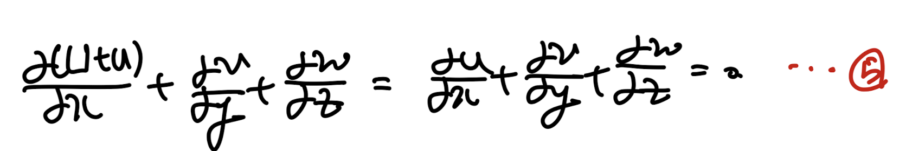<br />
자 지금까지, NS x,y,z 방향 식 + 연속방정식을 통해서<br />
4가지 식을 도출 하였다.<br />
이제 perturbation에<br />
Method of Normal modes<br />
을 적용해주자.<br />
(Coefficients in governing Eq depend only on y)<br />
(지난 시간에 배운)<br />
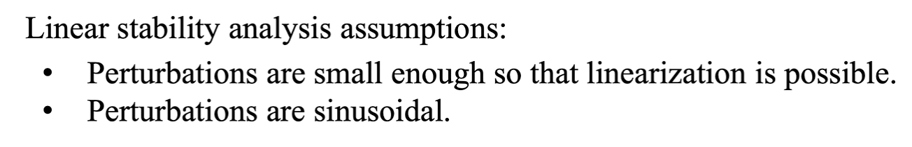<br />
Method of Normal modes assumptions<br />
중요한 것은, 3D라는 것.<br />
Pressure 도 perturbation이 존재한다는 것.<br />
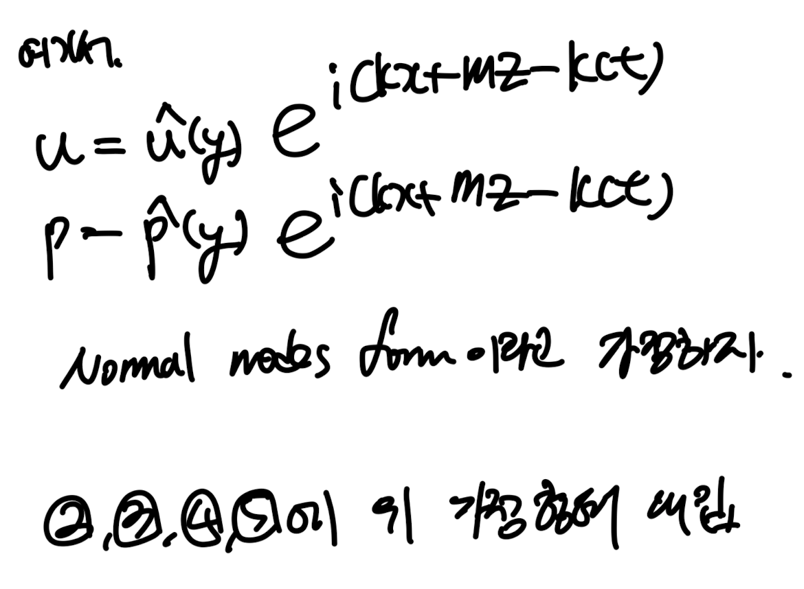<br />
대입 후, 쭉 전개를 진행해주면 다음과 같다.<br />
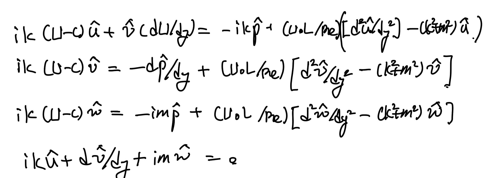<br />
여기서 첫번째(x방향식)<br />
세번째(z방향식)<br />
을 합쳐보자.<br />
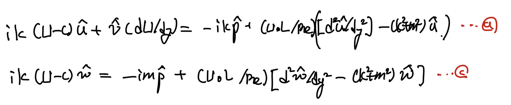<br />
위 Naviers stokes x,z 방향 식<br />
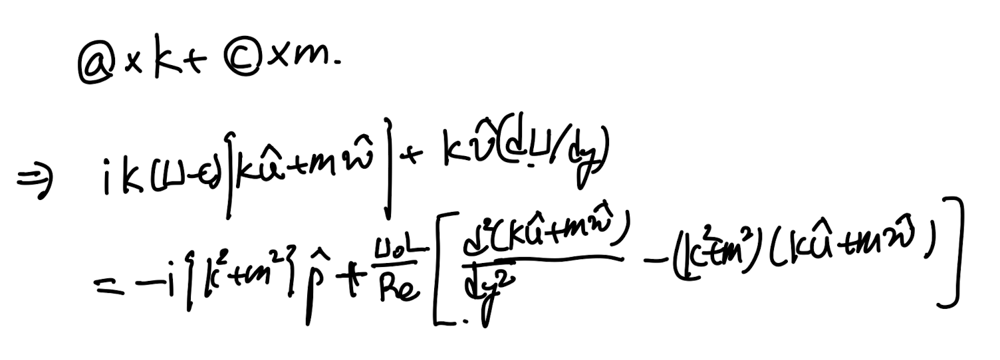<br />
여기서 다음의 치환을 해주자.<br />
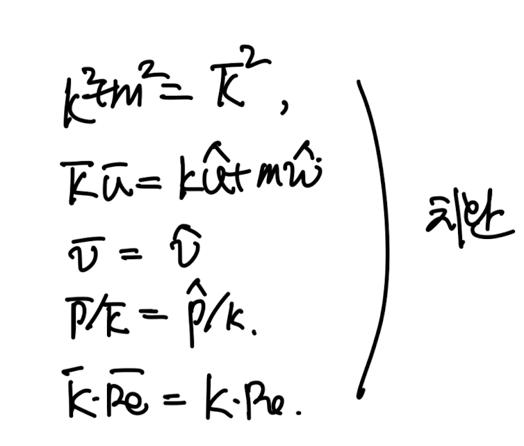<br />
치환후 정리하면 d식이 도출된다.<br />
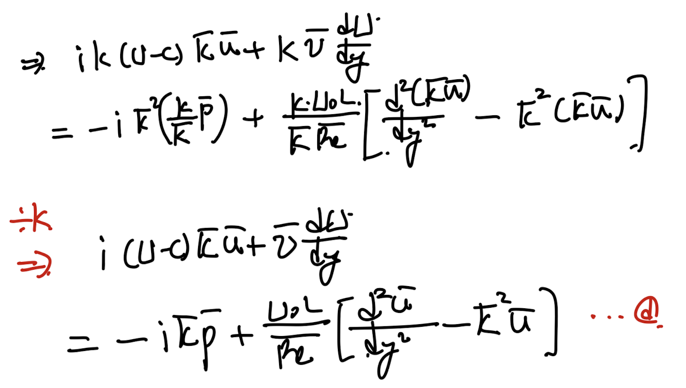<br />
여기서, 이제<br />
y방향 식, 연속방정식도 위 치환한 항들을 대입해주면<br />
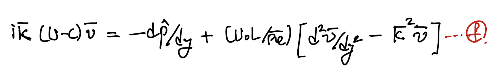<br />
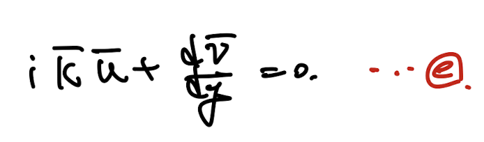<br />
<br />
<br />
위 치환후, 나온 식들은 모두 신기한 의미를 가지고 있다.<br />
바로, 치환한 새로운 wave number, phase complex number를<br />
가진 2D flow perturbation해석과<br />
동일 하다는 것이다.<br />
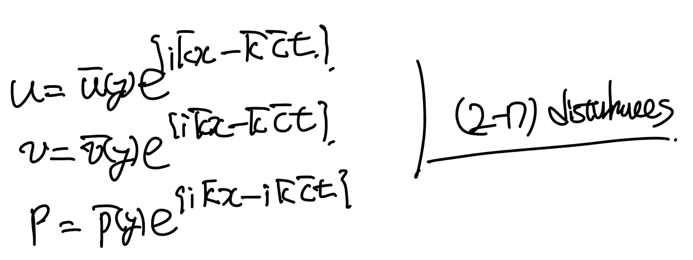<br />
2D flow perturbation. Method of normal modes.<br />
2D flow와 같음을 증명하기 위해서,<br />
x,y방향 모멘텀 방정식과, 연속방정식에<br />
위 perturbation 을 대입해주면,<br />
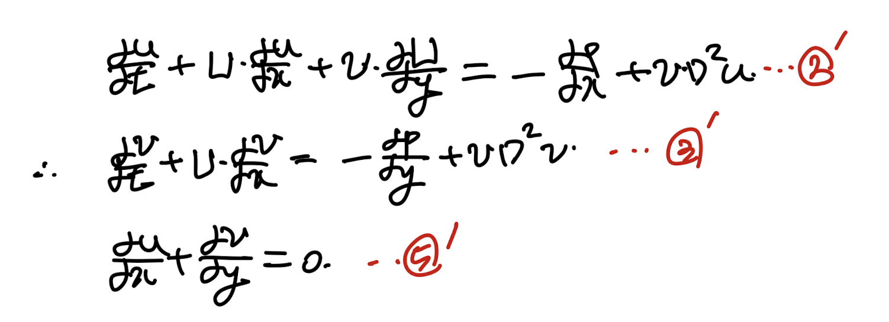<br />
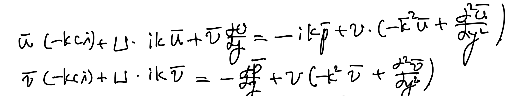<br />
2', 3' 모멘텀 방정식에 대입한 결과.<br />
이를 정리해주면,<br />
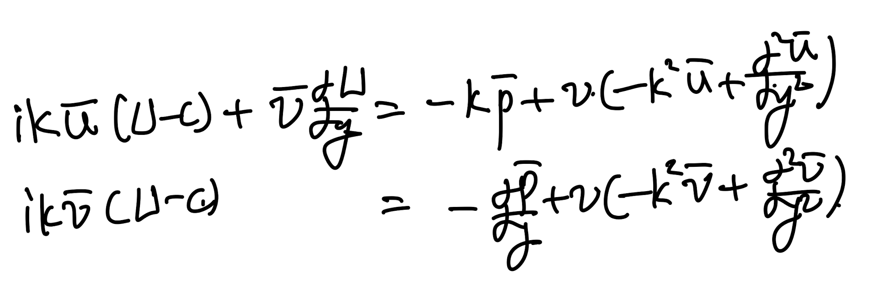<br />
이는 아까 유도하였던 (x+z 식 합침)<br />
3Dflow 식을 치환한 것과 동일함을 알 수 있다.<br />
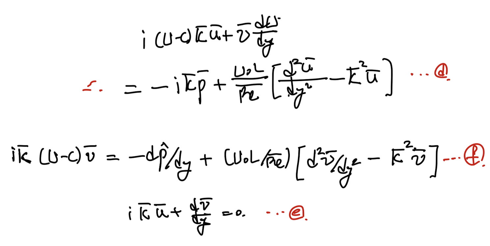<br />
[Squire's Theorem]<br />
To each Unstable 3D disturbance,<br />
an equivalent 2D one exists at a lower Re<br />
치환을 잘보면, 차수를 줄임으로써,<br />
wave number는 증가하였고,<br />
Reynolds number 는 감소하였음 알 수 있다.<br />
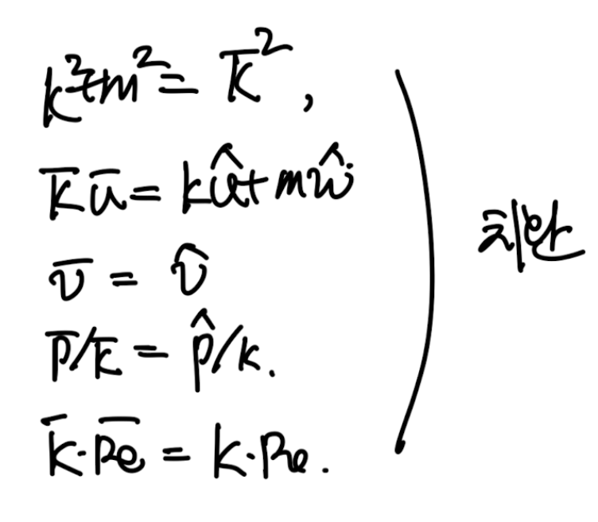<br />
따라서, Squire's theorem으로 2D<br />
disturbances만 고려해도 된다.<br />
자 이제 다시 정리해서 2D flow로 고려해주자.<br />
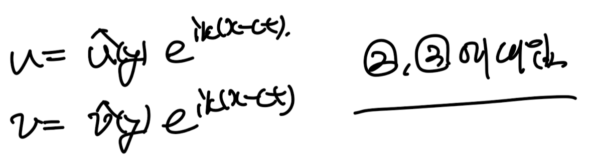<br />
2,3 Naviers Stokes x,y 축에 대입.<br />
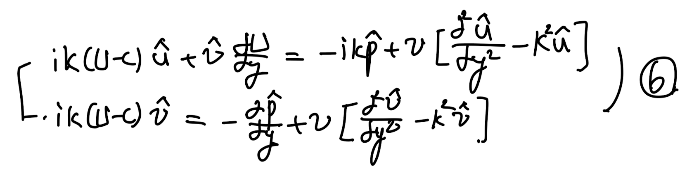<br />
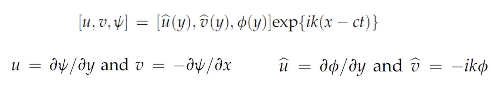<br />
여기서 stream function도 method of normal modes로 perturbation 항 고려해주자.<br />
Stream function coefficient로 u,v 계수를 통일해주고 6번 식에 대입해주자.<br />
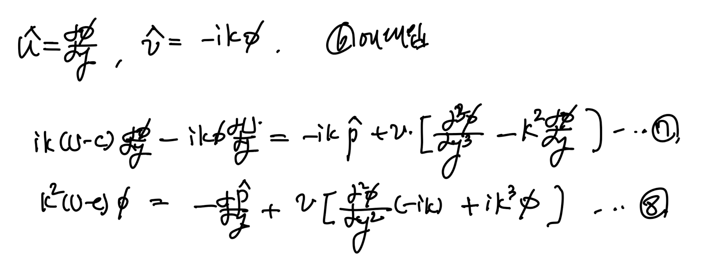<br />
이후 7번식을 (ik)로 나누어 주자.<br />
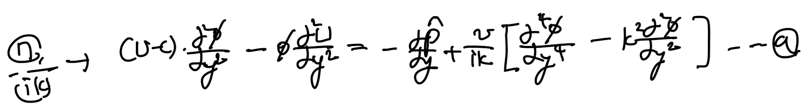<br />
유도된 9번 식에서 8번식을 빼주면.<br />
phi에 관한 식이 도출된다.<br />
[Orr-Sommerfeld Equation]<br />
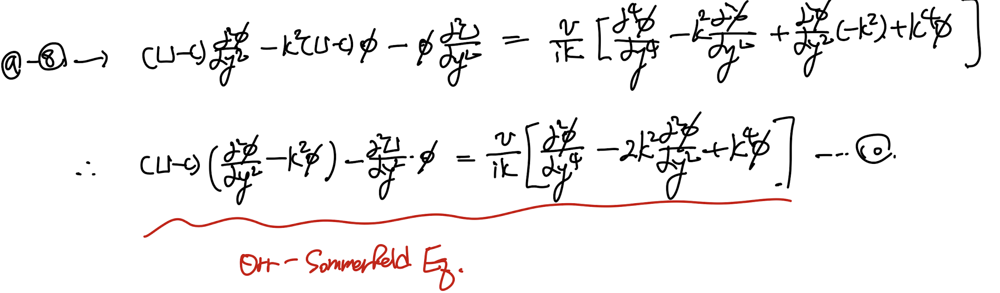<br />
ODE는 항상 Boundary condition을 확인해야 한다.<br />
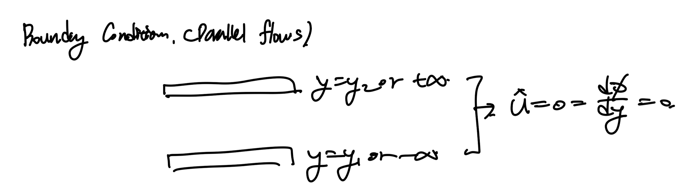<br />
confined BC example. parallel two plates.<br />
위 사진처럼 confined될 수도 있고,<br />
한정되지 않은 무한한 flow일 수도 있다.<br />
둘중 어느 경우든 속도(u,v)=0 -&gt;<br />
Φ = 0, d Φ/dy = 0<br />
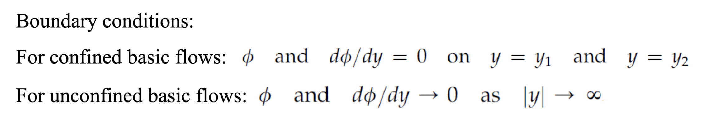</p>{% endraw %}
